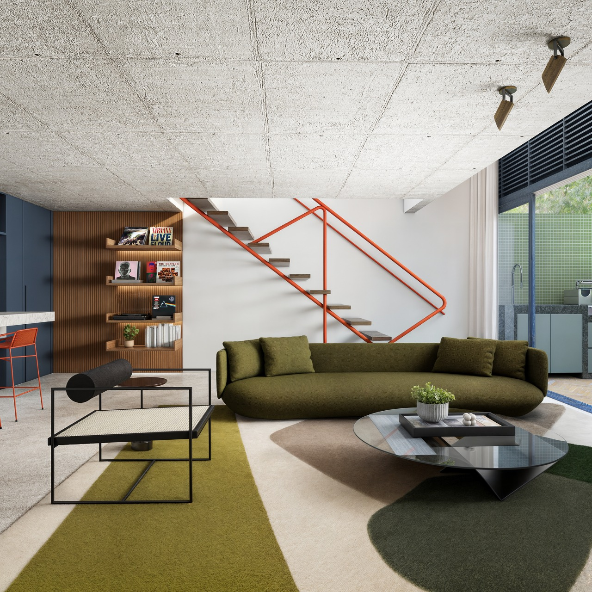
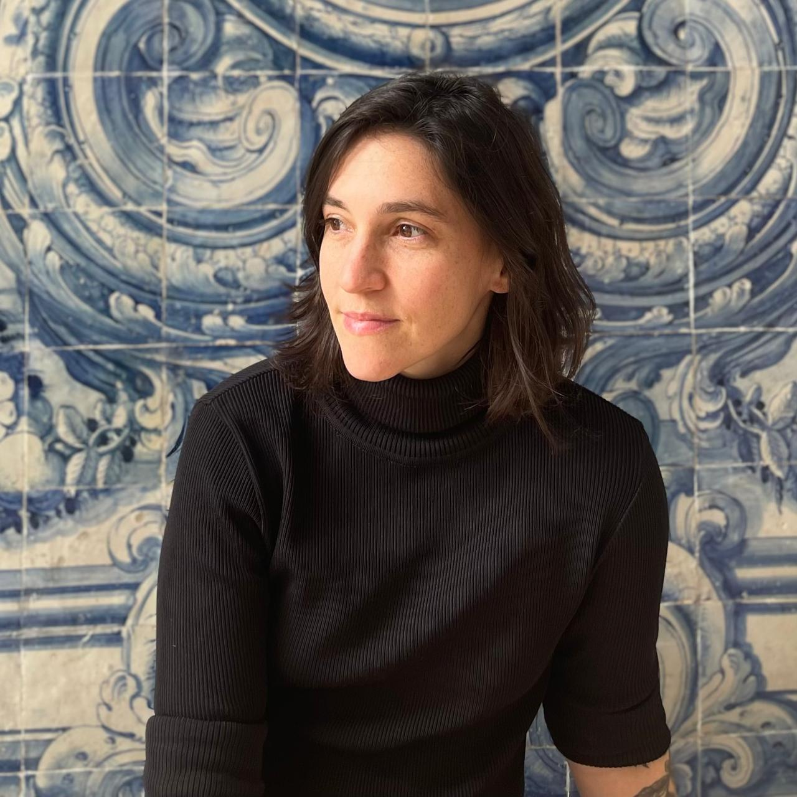

Nossa Arquitetura
Somos um estúdio de arquitetura sediado em Cataguases, MG. Iniciamos nossa atuação em 2020 com projetos em Minas Gerais, Rio de Janeiro e São Paulo. Desenvolvemos trabalhos em diversas escalas e segmentos, com ênfase em projetos residenciais, culturais e institucionais, buscando sempre uma relação harmônica entre a edificação e o meio em que se insere, seja ele urbano ou rural.
Nossa Arquitetura baseia-se na relação harmônica e na integração entre os diferentes elementos que compõem os espaços e os ambientes, no uso de formas puras, na racionalidade estrutural e no uso de materiais em sua essência. Buscamos sempre alcançar soluções criativas e inovadoras e procuramos tirar o melhor proveito dos condicionantes naturais: o sol, a ventilação, a vegetação local, e a topografia.
Somos um pequeno estúdio e dessa forma podemos oferecer um serviço pessoal e personalizado aos nossos clientes.

Quem sou?
Mariela Salgado Lacerda de Oliveira nasceu em Cataguases, MG e formou-se em Arquitetura e Urbanismo pela Universidade Federal do Rio de Janeiro (UFRJ) em 2013. Recebeu, ainda neste ano, o Prêmio Arquiteto do Amanhã, concedido pelo Instituto dos Arquitetos do Brasil (IAB-RJ) com seu trabalho final de graduação.
Entre 2013 e 2017 atuou como arquiteta em dois grandes escritórios do Rio de Janeiro, com uma breve passagem por São Paulo em 2014. Concluiu, em 2017, o Mestrado Profissional em Projeto e Patrimônio pelo Programa de Pós-graduação em Arquitetura da UFRJ (PROARQ) e lecionou, entre 2017 e 2019, as disciplinas de Concepção da Forma Arquitetônica II, Desenho de Observação I e Gráfica Digital no Departamento de Análise e Representação da Forma da Universidade Federal do Rio de Janeiro (DARF/UFRJ).
Neste mesmo período atuou como bolsista da Fundação Casa de Rui Barbosa desenvolvendo, junto ao Núcleo de Preservação Arquitetônica (NPARQ), a pesquisa "Plano de Conservação Preventiva do Museu Casa de Rui Barbosa: Conservação Programada do Jardim Histórico". Em 2020 retornou à Cataguases e fundou o Studio Catá Arquitetura.

Diálogo
Na elaboração de nossos projetos, procuramos compreender as necessidades e objetivos de cada cliente. A cada projeto, buscamos alcançar um resultado de excelência e não medimos esforços nesse processo. Entendemos que este é um importante investimento, muitas vezes um projeto de vida, e, por isso, buscamos sempre o diálogo como forma de construir uma proposta coerente com as expectativas, as necessidades e a identidade dos nossos clientes, resultando assim em projetos autênticos em seus aspectos conceituais e construtivos.